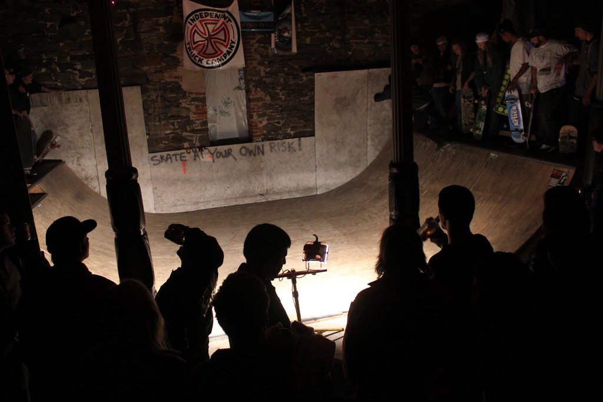

Never dead; temporarily gone.
Ruintown was originally a multi-use live-in venue, skate, and workshop space was created by Glenn Gentzke, Logan, and Dan DeFrancisco.
For information on the now-closed Ruintown space in Baltimore, MD visit our Facebook page.